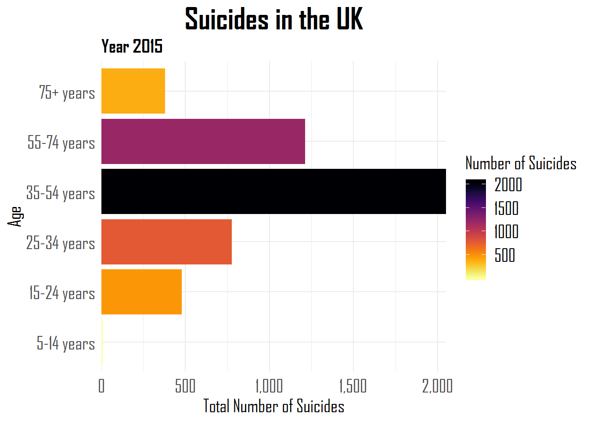
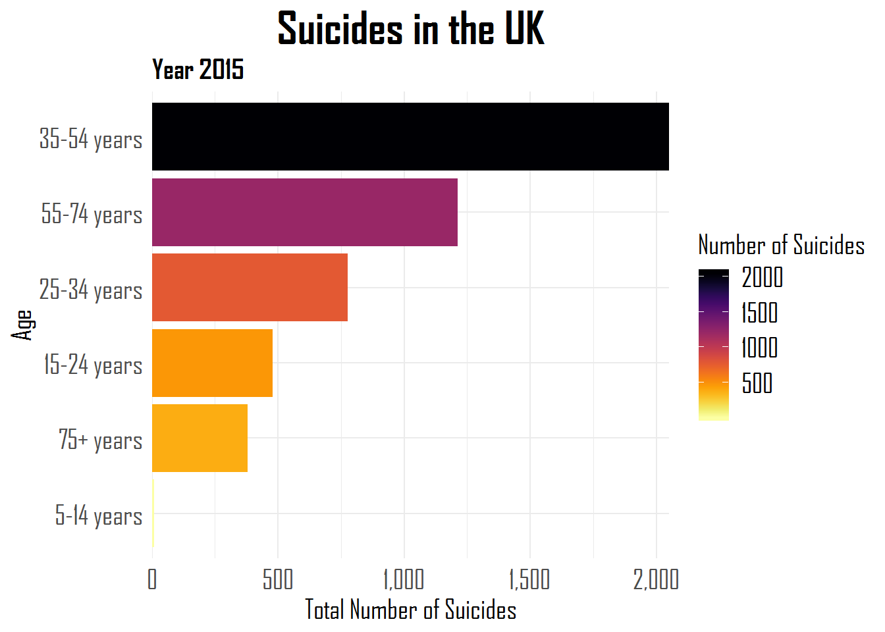
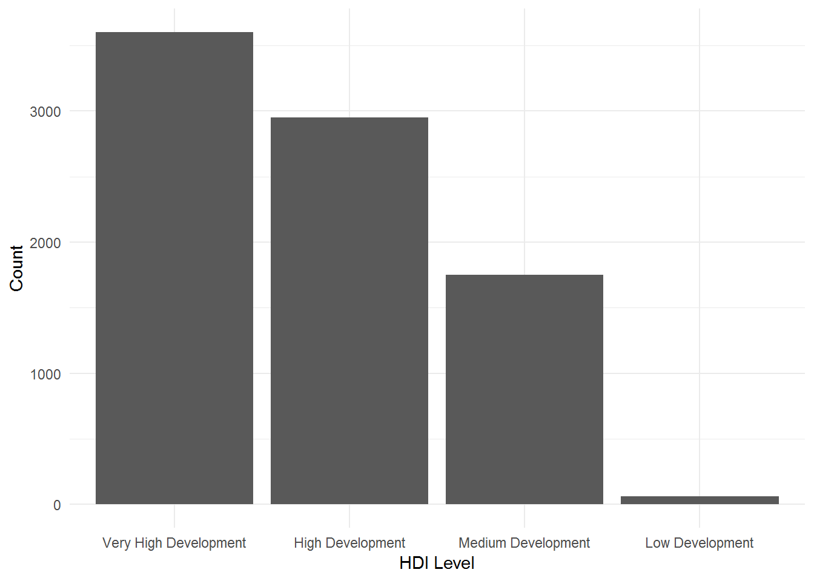
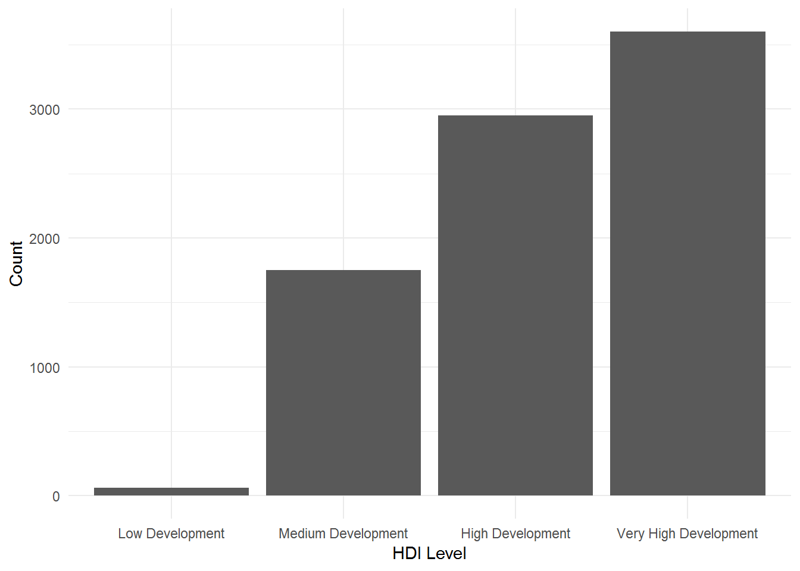
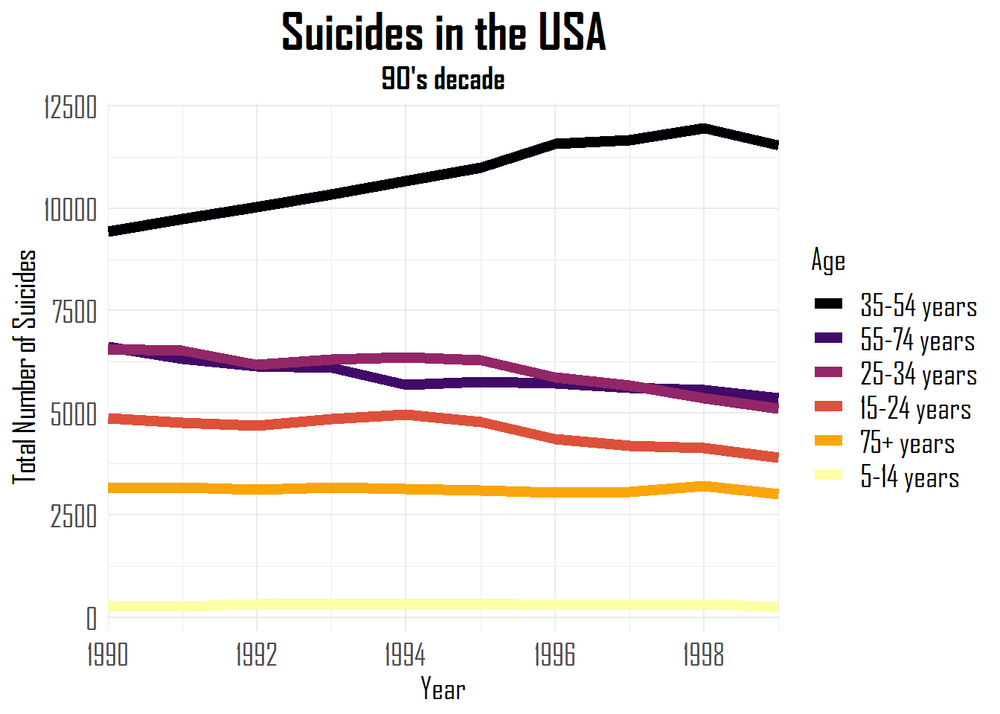

Factors in R: Forcats to help
In this post I’ll work with this dataset from Kaggle which is related to the number of suicides in several countries across many years. However, I won’t make any kind of inferential analysis about the data. My main goal is to make a tutorial about how to work with factors in R by showing the powerful tidyverse package called forcats. I will explore some variables that can be turned into factors and show you the main functions of forcats to help you wrangle data.
Now, we can load our libraries.
# load libraries
library(tidyverse) # wrangling and data visualization - includes the forcats package
library(readxl) # open excel files
library(here) # sets a path to your file
library(kableExtra) # visualize html tables
library(scales) # creates different types of scales(e.g. commas, dollar sign, etc...)
library(viridis) # colour palette
library(ggdark) # themes for plots
library(hrbrthemes) # add fonts in this case
options(scipen = 999) # remove scientific notationWe will now open our dataset. We will call it “suicides”.
# open dataset
suicides <- read_excel(here::here("suicides.xlsx"))
glimpse(suicides)## Observations: 27,820
## Variables: 12
## $ country <chr> "Albania", "Albania", "Albania", "Albania...
## $ year <dbl> 1987, 1987, 1987, 1987, 1987, 1987, 1987,...
## $ sex <chr> "male", "male", "female", "male", "male",...
## $ age <chr> "15-24 years", "35-54 years", "15-24 year...
## $ suicides_no <dbl> 21, 16, 14, 1, 9, 1, 6, 4, 1, 0, 0, 0, 2,...
## $ population <dbl> 312900, 308000, 289700, 21800, 274300, 35...
## $ `suicides/100k pop` <dbl> 6.71, 5.19, 4.83, 4.59, 3.28, 2.81, 2.15,...
## $ `country-year` <chr> "Albania1987", "Albania1987", "Albania198...
## $ `HDI for year` <dbl> NA, NA, NA, NA, NA, NA, NA, NA, NA, NA, N...
## $ `gdp_for_year ($)` <dbl> 2156624900, 2156624900, 2156624900, 21566...
## $ `gdp_per_capita ($)` <dbl> 796, 796, 796, 796, 796, 796, 796, 796, 7...
## $ generation <chr> "Generation X", "Silent", "Generation X",...# explore dataset
suicides %>%
head()## # A tibble: 6 x 12
## country year sex age suicides_no population `suicides/100k ~
## <chr> <dbl> <chr> <chr> <dbl> <dbl> <dbl>
## 1 Albania 1987 male 15-2~ 21 312900 6.71
## 2 Albania 1987 male 35-5~ 16 308000 5.19
## 3 Albania 1987 fema~ 15-2~ 14 289700 4.83
## 4 Albania 1987 male 75+ ~ 1 21800 4.59
## 5 Albania 1987 male 25-3~ 9 274300 3.28
## 6 Albania 1987 fema~ 75+ ~ 1 35600 2.81
## # ... with 5 more variables: `country-year` <chr>, `HDI for year` <dbl>,
## # `gdp_for_year ($)` <dbl>, `gdp_per_capita ($)` <dbl>, generation <chr>The age variable seems to be an interesting one to use in this tutorial. We can turn it into a factor variable with the as.factor function.
# lets work with the age variable. Let's turn age into a factor variable
suicides_tbl <- suicides %>%
mutate(age = as.factor(age))fct_relevel
Now that we have the age variable as factor we can check its levels.
# check levels of the variable age
levels(suicides_tbl$age)## [1] "15-24 years" "25-34 years" "35-54 years" "5-14 years" "55-74 years"
## [6] "75+ years"As we can see the levels of the factor variable age are not in the correct order. The level “5-14 years” appears in the 4th position, when it should be in the first one. To order the levels in the right way , we should use the fct_relevel function. We can do this by writing all arguments of the function in the correct order:
# forcats functions
# 1: fct_relevel()
suicides_tbl <- suicides_tbl %>%
mutate(age = fct_relevel(age,
"5-14 years",
"15-24 years",
"25-34 years",
"35-54 years",
"55-74 years",
"75+ years"
))
suicides_tbl %>%
pull(age) %>%
levels()## [1] "5-14 years" "15-24 years" "25-34 years" "35-54 years" "55-74 years"
## [6] "75+ years"Or we can use the argument after which in this case will correspond to 0, because we want the level 5-14 years to be the first one.
# fct_relevel alternative
suicides_tbl %>%
mutate(age = fct_relevel(age,
"5-14 years", after = 0
)) %>%
pull(age) %>%
levels()## [1] "5-14 years" "15-24 years" "25-34 years" "35-54 years" "55-74 years"
## [6] "75+ years"fct_reorder
One interesting function in forcats is fct_reorder. As you can see in the plot below, the age variable is ordered based on its levels.
# make a plot without fct_reorder
suicides_tbl %>%
filter(year== 2015,
country == "United Kingdom") %>%
group_by(age) %>%
summarise(suicides_total = sum(suicides_no)) %>%
mutate(prop = suicides_total / sum(suicides_total))%>%
ggplot(aes(age, suicides_total, fill = suicides_total,
color = NULL)) +
geom_col() +
scale_fill_viridis(option = "inferno", direction = -1) +
labs(title = "Suicides in the UK", subtitle = "Year 2015", y = "Total Number of Suicides",
x = "Age", fill = "Number of Suicides") +
scale_y_continuous(labels = comma,
expand = c(0,0)) +
coord_flip() +
theme_minimal() +
theme(plot.title = element_text(family = "Agency FB", face = "bold",
size = 25, hjust = .5),
plot.subtitle = element_text(family = "Agency FB", face = "bold",
size = 15),
axis.title = element_text(family = "Agency FB", size = 15),
axis.text = element_text(family = "Agency FB", size = 15),
legend.text = element_text(family = "Agency FB", size = 15),
legend.title = element_text(family = "Agency FB", size = 15))
However, in some cases we want the factor variables reordered in plots based on the values of some continuous variable. With that in mind we can use fct_reorder to reorder the age variable based on the total number of suicides.
# forcats
# 2: fct_reorder()
suicides_tbl %>%
filter(year== 2015,
country == "United Kingdom") %>%
group_by(age) %>%
summarise(suicides_total = sum(suicides_no)) %>%
mutate(prop = suicides_total / sum(suicides_total))%>%
ggplot(aes(fct_reorder(age, suicides_total), suicides_total, fill = suicides_total,
color = NULL)) +
geom_col() +
scale_fill_viridis(option = "inferno", direction = -1) +
labs(title = "Suicides in the UK", subtitle = "Year 2015", y = "Total Number of Suicides",x = "Age", fill = "Number of Suicides") +
scale_y_continuous(labels = comma,
expand = c(0,0)) +
coord_flip() +
theme_minimal() +
theme(plot.title = element_text(family = "Agency FB", face = "bold",
size = 25, hjust = .5),
plot.subtitle = element_text(family = "Agency FB", face = "bold",
size = 15),
axis.title = element_text(family = "Agency FB", size = 15),
axis.text = element_text(family = "Agency FB", size = 15),
legend.text = element_text(family = "Agency FB", size = 15),
legend.title = element_text(family = "Agency FB", size = 15))
This plot looks clearer than the last one. The age variable is reordered according to the number of suicides.
fct_explicit_na
Let’s work now with another variable of the dataset. We will create 5 levels of Human Development Index based on the variable HDI for year. We will turn this variable into a factor and relevel it again with fct_relevel and check for missing values.
suicides_tbl <- suicides_tbl %>%
mutate(hdi_cat = case_when(`HDI for year` >= 0.80 ~ "Very High Development",
`HDI for year` >= 0.70 ~ "High Development",
`HDI for year` >= 0.55 ~ "Medium Development",
`HDI for year` >= 0.35 ~ "Low Development",
`HDI for year` < 0.35 ~ "Very Low Development"
) %>% as.factor) %>%
mutate(hdi_cat = fct_relevel(hdi_cat,
"High Development", after = 2))
# check missing values
any(is.na(suicides_tbl$hdi_cat))## [1] TRUEGiven that we have missing values, we can use the function fct_explicit_na to give it a name.
# forcats
# 3: fct_explicit_na()
suicides_tbl <- suicides_tbl %>%
mutate(hdi_cat = fct_explicit_na(hdi_cat, na_level = "Missing"))fct_lump
We can also lump levels together in forcats with fct_lump. For instance, we have 4 levels within the variable correspondent to the categories of Human Development Index (hdi_cat), though we may be interested in lumping together the least common factors into a unique level. We can rename this new level with the argument other_level. We can lump according to two arguments, n = being the first one shown:
# forcats
# 4: fct_lump to lump levels
# n argument
suicides_tbl %>%
na.omit() %>%
mutate(hdi_lumped = fct_lump(hdi_cat, n = 2, other_level = "Average/Low Development")) %>%
count(hdi_lumped) %>%
mutate(prop = n / sum(n)) %>%
arrange(desc(n))## # A tibble: 3 x 3
## hdi_lumped n prop
## <fct> <int> <dbl>
## 1 Very High Development 3600 0.430
## 2 High Development 2952 0.353
## 3 Average/Low Development 1812 0.217In this case we retained the two most common categories of Human Development Index present in our dataset, while the remaining categories were put together into the variable “Average/Low Development”.
The second argument to lump together is called prop. This argument considers the proportions of each level. As you can see with the prop = 0.20 all levels with less than 20% will be grouped along. In this case, we have 3 unique HDI categories and one that corresponds to the other_level.
# prop argument
suicides_tbl %>%
na.omit() %>%
mutate(hdi_relevel = fct_lump(hdi_cat, prop =0.20, other_level = "Below Average")) %>%
count(hdi_relevel) %>%
mutate(prop = n / sum(n))## # A tibble: 4 x 3
## hdi_relevel n prop
## <fct> <int> <dbl>
## 1 Medium Development 1752 0.209
## 2 High Development 2952 0.353
## 3 Very High Development 3600 0.430
## 4 Below Average 60 0.00717fct_infreq
Moving on to other functions in forcats, another interesting one is fct_infreq, combined with ggplot2. This function is pretty neat when you want to reorder factor levels by frequency.
# forcats
# 5: fct_infreq
suicides_tbl %>%
na.omit() %>%
add_count(hdi_cat) %>%
ggplot(aes(fct_infreq(hdi_cat))) +
geom_bar(stat = "count") +
labs(x = "HDI Level", y = "Count") +
theme_minimal() 
fct_rev
However, we still have an order from right (more cases) to left (less cases). If you want to reorder with the terms of frequency from left (less cases) to right (more cases) you have to use fct_rev along with fct_infreq.
# forcats
# 6: fct_rev
suicides_tbl %>%
na.omit() %>%
add_count(hdi_cat) %>%
ggplot(aes(fct_rev(fct_infreq(hdi_cat)))) +
geom_bar(stat = "count") +
labs(x = "HDI Level", y = "Count") +
theme_minimal() 
fct_count
If we would be interested in counting the cases in each level, we could simply use fct_count.
# forcats
# 7: fct_count()
fct_count(suicides_tbl$hdi_cat)## # A tibble: 5 x 2
## f n
## <fct> <int>
## 1 Low Development 60
## 2 Medium Development 1752
## 3 High Development 2952
## 4 Very High Development 3600
## 5 Missing 19456fct_unique
Or to know the unique levels within our factors, we could use fct_unique.
# forcats
# 8: fct_unique()
fct_unique(suicides_tbl$hdi_cat) ## [1] Low Development Medium Development High Development
## [4] Very High Development Missing
## 5 Levels: Low Development Medium Development ... Missingfct_collapse
Now, let’s work with another variable from our dataset. The variable “generation” has 6 levels: “Silent”, “G.I. Generation”, “Boomers”, “Generation X”, “Generation Z”, and “Millennials”. We could be interested in grouping together some of the levels in a unique one. For this we can use the function fct_collapse.
# forcats
# 9: fct_collapse()
suicides_tbl %>%
mutate(generation = as.factor(generation)) %>%
mutate(generations = fct_collapse(generation,
"Older Generations" = c("Silent", "G.I. Generation", "Boomers"),
"Younger Generations" = c("Generation X", "Generation Z", "Millenials")
)) %>%
pull(generations) %>%
levels()## [1] "Older Generations" "Younger Generations"fct_other
There might be some cases, where you want to compare one or more levels of a factor variable against all the other levels. For that, you can use the fct_other. Let’s imagine that you wanted to create a new factor variable where you wanted to compare the level “Silent” generation against all the other generation levels. In this case, we could use fct_other and the argument keep equals “Silent”.
# forcats
# 10: fct_other()
suicides_tbl %>%
mutate(silent_against_other = fct_other(generation, keep = "Silent")) %>%
pull(silent_against_other) %>%
levels()## [1] "Silent" "Other"fct_recode
There are other cases, where you just want to recode your factor variables. In such cases, fct_recode is of great help.
# forcats
# 11: fct_recode()
suicides_tbl %>%
mutate(age_levels = fct_recode(age,
"Child" = "5-14 years",
"Adolescent/Young Adult"= "15-24 years",
"Adult" = "25-34 years",
"Middle-Aged Adult"= "35-54 years",
"Older Adult" = "55-74 years",
"Senior" = "75+ years")) %>%
pull(age_levels) %>%
levels()## [1] "Child" "Adolescent/Young Adult"
## [3] "Adult" "Middle-Aged Adult"
## [5] "Older Adult" "Senior"fct_reorder2
When you intend to map colors in a line plot where your goal is to reorder a value according to values more associated with the y variable, fct_reorder2 is of great use. In this example below, we are reordering the lines’ colors according to the higher total number of suicides by age group during the nineties in the USA.
# forcats
# 12: fct_reorder2()
suicides_tbl%>%
filter(year > 1989, year < 2000, country == "United States") %>%
group_by(year, age) %>%
summarise(suicides_total = sum(suicides_no)) %>%
ggplot(aes(year, suicides_total, colour = fct_reorder2(age, year, suicides_total))) +
geom_line(size = 2.5) +
scale_x_continuous(expand = c(0,0),
breaks = c(seq(1990, 1998, 2)),
labels = c(1990, 1992, 1994, 1996, 1998),
limits = c(1990, 1999)) +
scale_colour_viridis_d(option = "inferno") +
labs(title = "Suicides in the USA", subtitle = "90's decade",
y = "Total Number of Suicides",
x = "Year", colour = "Age") +
theme_minimal() +
theme(plot.title = element_text(family = "Agency FB", face = "bold",
size = 25, hjust = .5),
plot.subtitle = element_text(family = "Agency FB", face = "bold",
size = 15, hjust = 0.5),
axis.title = element_text(family = "Agency FB", size = 15),
axis.text = element_text(family = "Agency FB", size = 15),
legend.text = element_text(family = "Agency FB", size = 15),
legend.title = element_text(family = "Agency FB", size = 15))
fct_relabel
We can also relabel factor variables with fct_relabel. Just to give a quick example, we can remove the word “years” from our age variable.
# forcats
# 13: fct_relabel
suicides_tbl$age %>% fct_relabel(~ str_replace_all(.x, "years", " ")) %>% head()## [1] 15-24 35-54 15-24 75+ 25-34 75+
## Levels: 5-14 15-24 25-34 35-54 55-74 75+fct_anon
There might be also some cases where you wish to anonymize your data, then you can use the fct_anon.
# forcats
# 14: fct_anon
suicides_tbl %>%
mutate(generation = as.factor(generation) %>% fct_anon()) %>%
group_by(generation) %>%
count()## # A tibble: 6 x 2
## # Groups: generation [6]
## generation n
## <fct> <int>
## 1 1 2744
## 2 2 1470
## 3 3 4990
## 4 4 5844
## 5 5 6364
## 6 6 6408fct_shift
When you have a factor whose levels are not in the desired and/ or correct order you can use the fct_shift function and add positive (shift to the left) or negative (shift to right) numbers to the n argument. We can check it in this example without fct_shift:
suicides_tbl %>%
mutate(generation = as.factor(hdi_cat)) %>%
pull(generation) %>%
levels()## [1] "Low Development" "Medium Development" "High Development"
## [4] "Very High Development" "Missing"And with fct_shift where each level is moved one level to the right because n = -1.
# forcats
# 15: fct_shift ()
suicides_tbl %>%
mutate(generation = as.factor(hdi_cat) %>% fct_shift(n = -1)) %>%
pull(generation) %>%
levels()## [1] "Missing" "Low Development" "Medium Development"
## [4] "High Development" "Very High Development"fct_shuffle
If you just want to randomly relevel the levels of your factor variable, you can simply use fct_shuffle.
# forcats
# 16: fct_shuffle()
suicides_tbl %>%
mutate(generation = as.factor(generation) %>% fct_shuffle()) %>%
pull(generation) %>%
levels()## [1] "Boomers" "G.I. Generation" "Millenials" "Generation Z"
## [5] "Silent" "Generation X"Conclusion
I hope you liked this post about how to work with factors in R. The wrangling of factor variables becomes smooth with the help of this great package called forcats. Keep learning and coding!